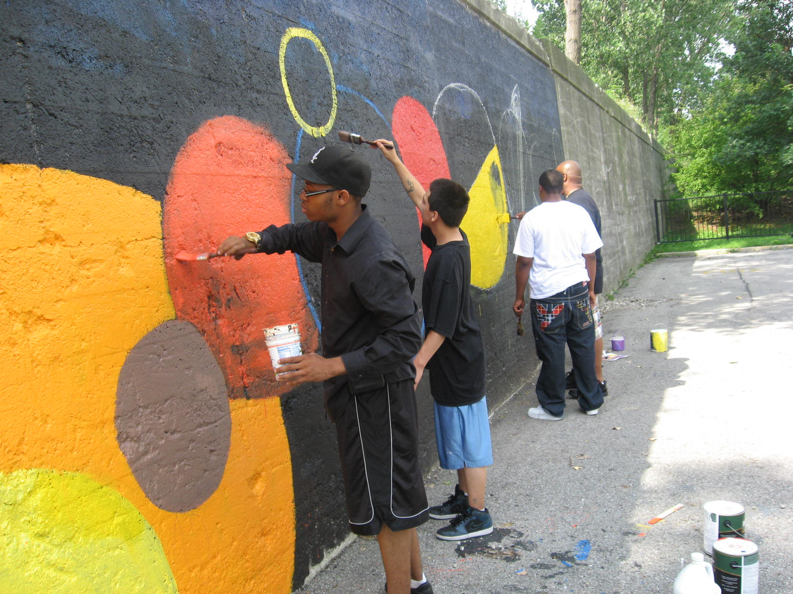

Who We Are
Franklin County Family & Community Services are public agencies created by the state of Ohio to provide mental health, developmental disability and/or substance abuse services to residents of Franklin County and its surrounding areas.
Our Philosophy
To maximize satisfaction and outcomes through respectful, evidence-based treatment and interventions, with responsible use of resources. We strive for individual empowerment, passion for innovation and integrity, customer-driven care and support and a focus on community.